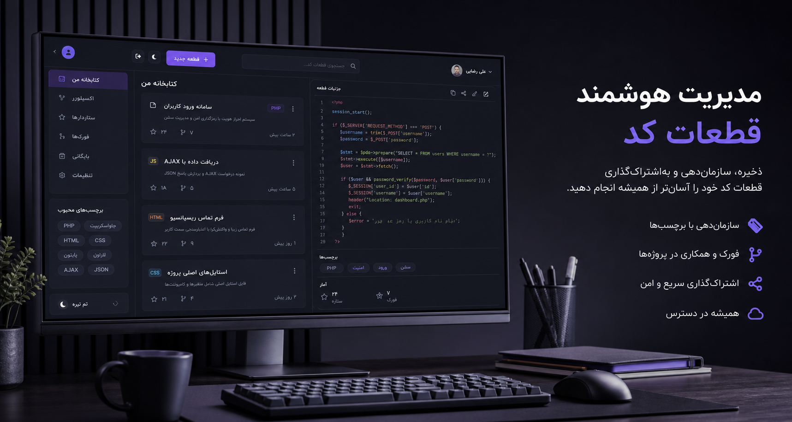

مدیریت قطعه کد
کدهای PHP، HTML، CSS و JavaScript خود را با دسته بندی و تاریخچه نگه دارید.

قطعه کدهای خود را ذخیره کنید، نسخه ها را نگه دارید، با دیگران به اشتراک بگذارید و از روی کدهای عمومی فورک بسازید.
کدهای PHP، HTML، CSS و JavaScript خود را با دسته بندی و تاریخچه نگه دارید.
از قطعه کدهای عمومی فورک بسازید و نسخه مخصوص خودتان را ادامه دهید.
تغییرات مهم را از دست ندهید و هر زمان لازم بود به نسخه قبلی برگردید.